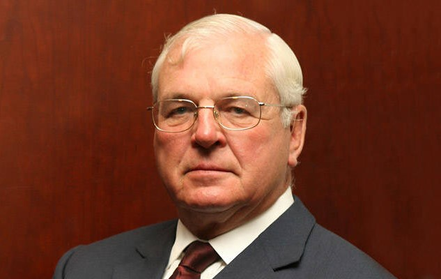
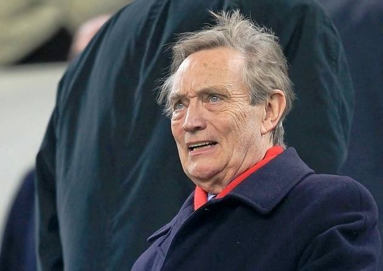
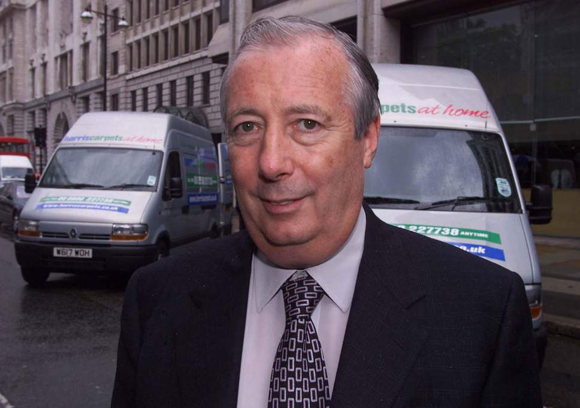
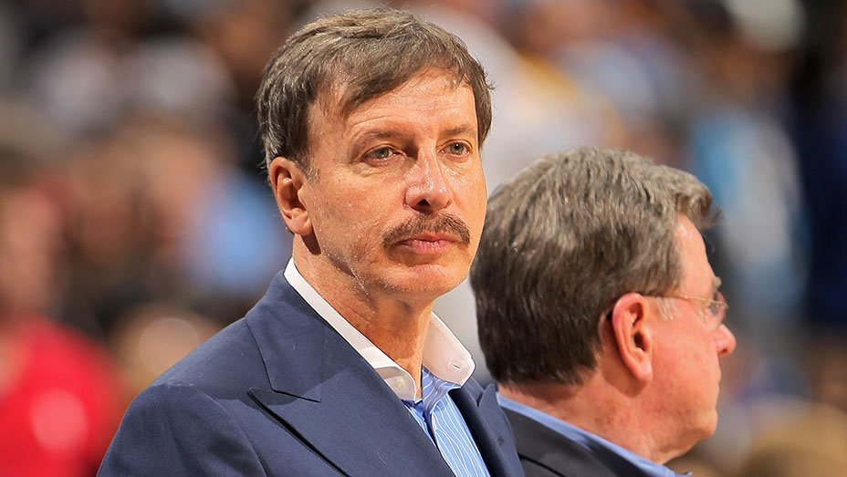
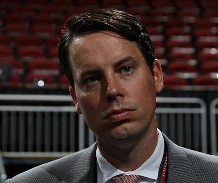

Chairman - Sir Chips Keswick
Sir Chips Keswick was first appointed as an Arsenal director in November 2005 and replaced the outgoing Peter Hill-Wood as Chairman of Arsenal Holdings plc in June 2013.

Director - Ken Friar OBE
Arsenal Football Club’s longest-serving director, Ken Friar OBE has been a mainstay of the Club for more than 60 years.

Director - Lord Harris of Peckham
Lord Harris of Peckham was appointed to the Arsenal board in November 2005.

Director - Stan Kroenke
Stan Kroenke became a shareholder in May 2007, was appointed to the Board of Directors in September 2008 and became the majority shareholder of Arsenal Football Club in April 2011.

Director - Josh Kroenke
Josh Kroenke joined the board of Arsenal Football Club in December 2013.
Ownership
The Arsenal Football Club plc is a 100% owned subsidiary of Arsenal Holdings Limited. Arsenal Holdings Limited is 100% owned by KSE UK INC. KSE UK INC is 100% owned by E. Stanley Kroenke.
© Arsenal, Saleh Zeineddine - 2018